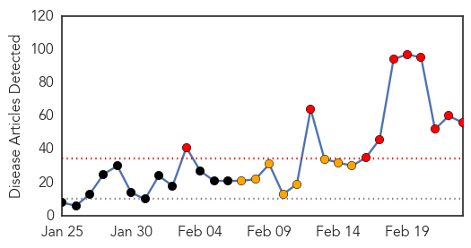
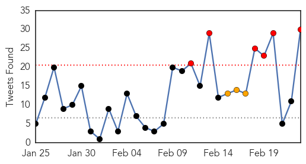
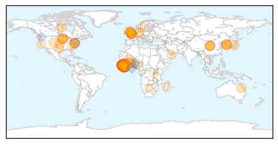

Swine Flu
30-Day Web Trend
10 alerts, 8 warnings

30-Day Twitter Trend
0 alerts, 0 warnings

Article Locations

Article Confidences
Top Articles:
- 1.000
- Swine flu in India: 38 positive cases; death toll in C'garh rises to four
- 1.000
- Doctors in Haryana accuse health department of discouraging laboratory tests for swine flu
- 1.000
- H1N1 Treatment Burns Hole in Patients' Pocket, Exposes Chinks in Medical Sector
- 1.000
- Swine flu cases cross 14,000, 832 deaths reported
- 1.000
- Swine Flu Spreading in India: Symptoms, Causes, Diagnosis, Treatment
- 1.000
- 84 new samples test positive for swine flu virus in Delhi
- 1.000
- Swine Flu toll rises to 14,000 and 832 deaths across India
- 1.000
- Swine flu in India: 832 deaths reported, cases cross 14,000
- 0.999
- Private doctors in Haryana flay govt. for downplaying swine flu cases
- 0.999
- 98 fresh cases in 3 days, H1N1 count up to 228
- 0.999
- Swine flu effects in India and myths about swine flu
- 0.999
- Rapid rise in swine flu deaths and cases in India
- 0.999
- Hospitals with over 50 beds can treat swine flu: Delhi health department
- 0.996
- Don't panic, sufficient medicines and fully equipped to deal with swine flu: UP govt
- 0.995
- Gujarat Junior Health Minister Tests 'Positive' for Swine Flu
- 0.995
- Fully Equipped to Deal With Swine Flu
- 0.995
- ‘Book Health Officials For Criminal Negligence’
- 0.995
- Swine flu claims 12 more lives in Gujarat; toll reaches 219
- 0.994
- Passengers screened for swine flu at Mizoram's airport, permitted from the Aviation department
- 0.994
- Swine Flu Spreads in Tamil Nadu, 8 Deaths, 225 Affected
- 0.994
- Swine Flu Claims 38 More Lives in India, Total Death Toll Crosses 800
- 0.993
- Swine flu: Toll rises to 219 as 12 more succumb in Gujarat
- 0.993
- Despite HC order, pvt hospitals yet to increase wards
- 0.993
- Latest News & In-depth Coverage on Kashmir Conflict
- 0.992
- As Swine flu cases rise, people turn to BMC’s helpline
- 0.992
- No swine flu death reported in Maharashtra today
- 0.991
- After vaccines, homeopathic medicines, IPS officer trainees test positive for H1N1
- 0.991
- 7 die of swine flu in Maha taking death toll to 99
- 0.984
- 3rd swine flu case in Nagaland
- 0.981
- H1N1 cases surge past 3,000-mark in Gujarat
- 0.980
- Flu steps after babu death
- 0.973
- H1N1 lab at SSGH hits a roadblock
- 0.972
- Guj junior health minister tests positive for swine flu – THE SEN TIMES
- 0.970
- Thane well-stocked with Swine flu medicines, well-prepared to tackle the disease
- 0.966
- Two more deaths take swine flu toll to five in Lucknow
- 0.964
- Swine flu toll rises to six in Kashmir
- 0.963
- 17 new patients of swine flu in Lucknow, 297 cases in UP
- 0.963
- Separate OPD for H1N1 at hospitals
- 0.962
- Swine flu hits UP legislator, Lucknow reports 228 cases
- 0.962
- Swine flu hits UP legislator, Lucknow reports 228 cases
- 0.954
- Bengal CM calls for joint effort to fight swine flu in state
- 0.953
- Swine flu toll rises to six in Kashmir
- 0.949
- Mamata calls for joint efforts to fight swine flu
- 0.943
- Gurgaon man sold swine flu ‘vaccine’
- 0.938
- Swine flu scare: Sale of masks shoots up in the city
- 0.935
- H1N1 Test Rate Fixed at Rs 3,750
- 0.926
- Passengers to be screened for swine flu at Mizoram's airport
- 0.922
- Gujarat junior health minister tests positive for swine flu
- 0.902
- 12 More Swine Flu Deaths in Gujarat, Government Under Fire Over Lack of Doctors
- 0.858
- In Gujarat, Junior Health Minister Tests Positive for Swine Flu
Showing top 50 articles...
Top Tweets:
-
No tweets found for Feb 23, 2015
Ebola
30-Day Web Trend
0 alerts, 0 warnings

30-Day Twitter Trend
6 alerts, 3 warnings

Article Locations
Article Confidences

Top Articles:
- 1.000
- Obasanjo Seeks Support For West Africa
- 1.000
- Six lessons from the initial failed international response to Ebola
- 0.999
- As Ebola wanes, MN sticks with expensive monitoring program
- 0.999
- Sierra Leone quarantines Ebola-hit orphanage
- 0.999
- Ebola drug in Guinea helps some, stirs debate on broader use
- 0.998
- Liberia Lifts Ebola Curfew, Opens Borders
- 0.998
- Sierra Leone quarantines Ebola-hit orphanage
- 0.998
- As Ebola outbreak wanes in West Africa, Minnesota sticks with costly monitoring program
- 0.998
- Sierra Leone quarantines Ebola-hit orphanage
- 0.997
- Liberia lifts Ebola curfew, reopens borders
- 0.997
- Canada to Stop Issuing Visas to People from West African Countries
- 0.997
- 2 leading Ebola vaccines appear safe, WHO says
- 0.996
- Minnesota could monitor travelers for Ebola another year
- 0.996
- Robbery Matter Involving Former Health Minister Committed to High Court
- 0.996
- VIDEO: Liberia reopens border with Sierra Leone
- 0.996
- Interview: UN official urges vigilance as Ebola situation improves
- 0.995
- 833 Health Workers Infected With Ebola
- 0.994
- Ebola and the battle against complacency
- 0.994
- Observer
- 0.992
- Sierra Leone orphanage quarantined
- 0.991
- Raising awareness about Ebola - Sierra Leone
- 0.991
- Ebola drug shows some promise in first tests in West Africa - MyNorthwest
- 0.988
- Life Sciences Index Novavax Announces Initiation of Ebola Vaccine Phase 1 Clinical Trial
- 0.986
- Liberia leader urges help in post-Ebola phase
- 0.985
- UK Ebola medics under investigation
- 0.984
- S. Korea's 2nd Ebola relief team set to return home
- 0.984
- Ebola UN development chief begins last leg of West Africa mission
- 0.980
- Maryland officials probe death of inmate in steam-filled cell
- 0.980
- Scouts slam Jameis Winston’s makeup: Likely ‘bust’
- 0.980
- Care International maps out strategies for Post Ebola engagement in Sierra Leone
- 0.977
- Sierra Leone: Sierra Leone quarantines Ebola-hit orphanage
- 0.970
- Guinean Doctor Survives Ebola, Pays It Forward - Guinea
- 0.967
- Dead Que. man tests negative for Ebola
- 0.967
- Africa: Africa Must Have Faith in Its Abilities
- 0.963
- WHO Gives OK to First Rapid-Result Ebola Diagnostic
- 0.958
- Sierra Leone: Maternal health in a time of Ebola
- 0.957
- New WHO Regional Director Commends Sierra Leone in the Fight against Ebola
- 0.954
- Liberia re-opens land border following deadly Ebola outbreak
- 0.954
- UK Defence Secretary Visits Sierra Leone
- 0.951
- Ebola: how to prevent a lethal legacy for food security
- 0.950
- LIBERIA: Brown Lauds EU Role in Fighting Ebola
- 0.946
- Obasanjo visits Ebola-hit countries
- 0.937
- Positive News in Ebola Recovery from Sierra Leone
- 0.933
- Ecobank Wins Best Bank 2014 Accolade
- 0.927
- Communities urged not to resort to unorthodox means in treating Ebola
- 0.926
- Ebola 'could spike again'
- 0.926
- S. Korea's 2nd Ebola relief team set to return home
- 0.920
- Ebola medics recount mission on edge of death, AsiaOne World News
- 0.915
- Alpha Sorority Distributes US$100,000 Medical Supplies
- 0.885
- AUDIO SLIDESHOW: Ebola: Back to school, but is it safe?
Showing top 50 articles...
Top Tweets:
- 0.971
- The Ebola virus epidemic has caused more than 10000 children in West Africa to lose one or both parents. AfricaAgainstEbola AUonebola
- 0.905
- World Health Organization Approves New 15 Minute Ebola Test - GOOD Magazine http://t.co/zwEzAEndrk ebola EVD
- 0.905
- World Health Organization Approves New 15 Minute Ebola Test - GOOD Magazine http://t.co/yYYjnIsUDB ebola EVD
- 0.905
- World Health Organization Approves New 15 Minute Ebola Test - GOOD Magazine http://t.co/xq8qcOhZ2W ebola EVD
- 0.905
- World Health Organization Approves New 15 Minute Ebola Test - GOOD Magazine http://t.co/wifhneGA2Q ebola EVD
- 0.905
- World Health Organization Approves New 15 Minute Ebola Test - GOOD Magazine http://t.co/sW43b0y2kG ebola EVD
- 0.905
- World Health Organization Approves New 15 Minute Ebola Test - GOOD Magazine http://t.co/rU7yIbIZ1R ebola EVD
- 0.905
- World Health Organization Approves New 15 Minute Ebola Test - GOOD Magazine http://t.co/otxDGmDttU ebola EVD
- 0.905
- World Health Organization Approves New 15 Minute Ebola Test - GOOD Magazine http://t.co/nOThaqgxjP ebola EVD
- 0.905
- World Health Organization Approves New 15 Minute Ebola Test - GOOD Magazine http://t.co/m1yd9WtKjy ebola EVD
- 0.905
- World Health Organization Approves New 15 Minute Ebola Test - GOOD Magazine http://t.co/i8hpXPogAo ebola EVD
- 0.905
- World Health Organization Approves New 15 Minute Ebola Test - GOOD Magazine http://t.co/blI8TTpyYS ebola EVD
- 0.905
- World Health Organization Approves New 15 Minute Ebola Test - GOOD Magazine http://t.co/bR4zWucCeE ebola EVD
- 0.905
- World Health Organization Approves New 15 Minute Ebola Test - GOOD Magazine http://t.co/TnsMmmHat1 ebola EVD
- 0.905
- World Health Organization Approves New 15 Minute Ebola Test - GOOD Magazine http://t.co/9KtIpiFZxw ebola EVD
- 0.785
- Ebola Update: 23371 confirmed probable and suspected cases reported in 3 most affected countries w 9442 deaths https://t.co/gYTmkCY9BH
- 0.768
- Ebola Drug Shows Some Promise in First Tests in West Africa - ABC News http://t.co/Qo9rbfC4ZB ebola EVD
- 0.758
- RT: Ebola Update: 23371 confirmed probable and suspected cases reported in 3 most affected countries w 9442 deaths https://t.co…
- 0.745
- Food drive for Ebola survivors in West Africa launched in Brooklyn Park - MinnPost http://t.co/TZwJcsCdiw ebola EVD
- 0.692
- 2 leading Ebola vaccines appear safe WHO says - Baxter Bulletin http://t.co/PnkkoDxeBT ebola EVD
- 0.660
- Liberia Lifts Ebola Curfew Opens Borders - Voice of America http://t.co/2TO3F9WzQG ebola EVD
- 0.642
- North Korea running scared from Ebola bans foreigners from marathon - Reuters http://t.co/jtkeSIPxmF ebola EVD
- 0.586
- Federal Funding in Support of Ebola Medical Countermeasures R&D by
- 0.541
- The Task After Ebola - New York Times http://t.co/rOYbyRTtDo ebola EVD
- 0.536
- Ebola Fight: IMF Gives Guinea Extra $37.7 M To Combat Ebola http://t.co/lT4goPYGXg
- 0.533
- UK Ebola medics under investigation - BBC News http://t.co/zBHrmEvMeh ebola EVD
- 0.533
- UK Ebola medics under investigation - BBC News http://t.co/lWVkNSs7Nr ebola EVD
- 0.533
- UK Ebola medics under investigation - BBC News http://t.co/TaLOebwbk5 ebola EVD
- 0.533
- UK Ebola medics under investigation - BBC News http://t.co/CFIxvshvpJ ebola EVD
- 0.533
- UK Ebola medics under investigation - BBC News http://t.co/4cqxaxWpTI ebola EVD